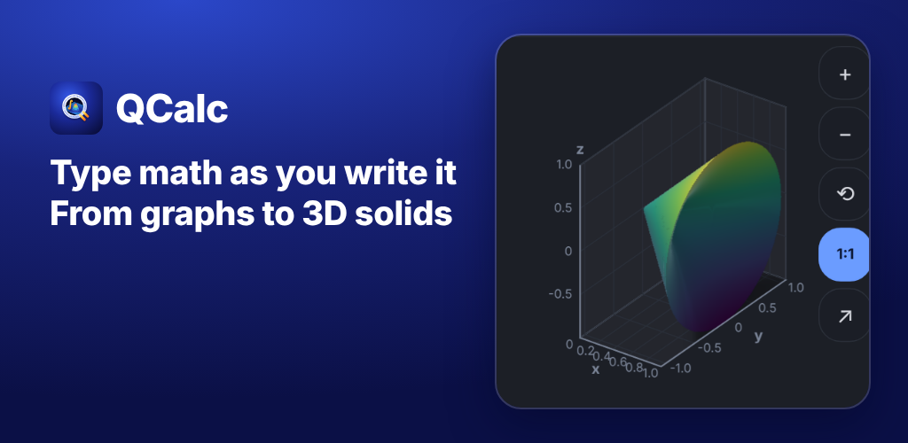
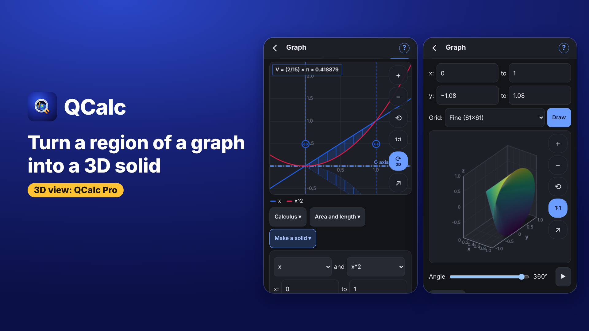
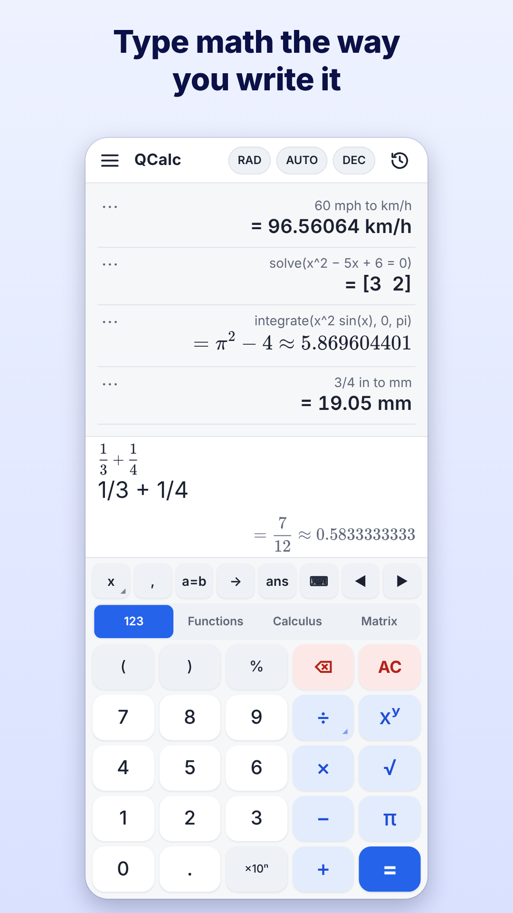
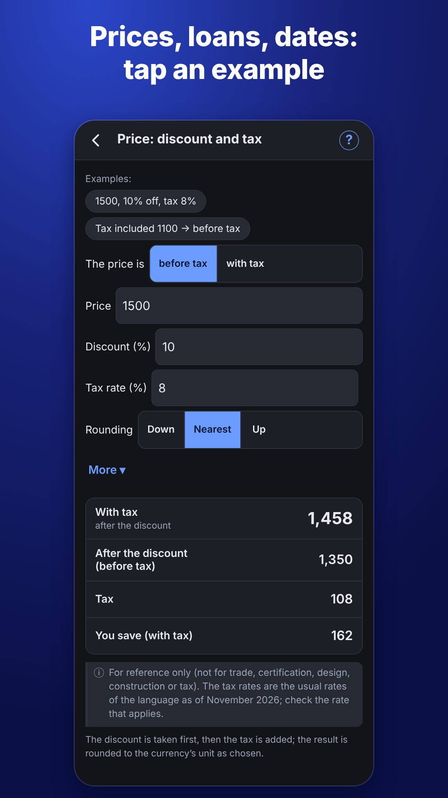
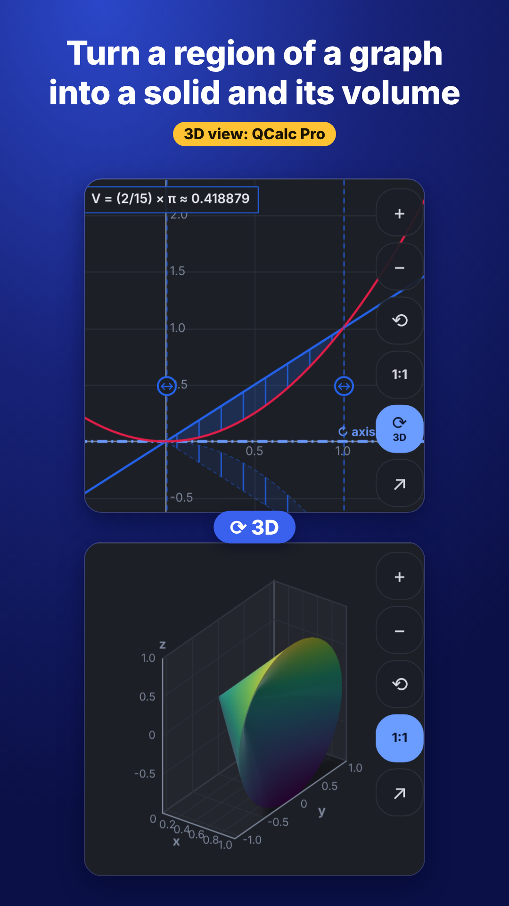
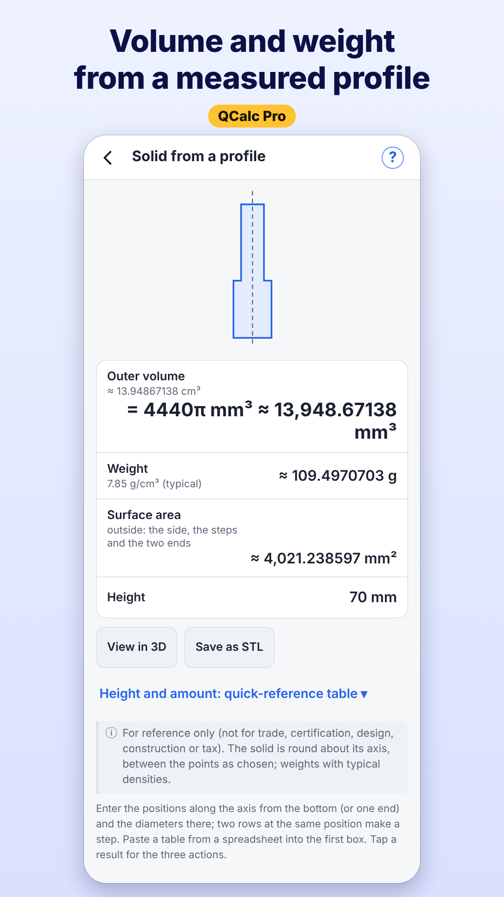

QCalc press kit
A scientific calculator for Android that you type into the way you write math
A scientific calculator for Android that you type into the way you write math
QCalc lets you type a calculation as you would write it, such as 60 mph to km/h, solve(x^2 − 5x + 6 = 0) or integrate(x^2 sin(x), 0, pi), and keeps answers exact when it can (fractions, roots, π). Its Tools screen gathers everyday calculations — price with discount and tax, percentages, unit prices, splitting a bill, loans with a repayment table, savings, dates and hours worked — each with examples that give the answer with one tap. In the 2D graph, "⟳ 3D" turns the region between two curves into a solid of revolution and shows its volume at once.
QCalc runs every calculation on the phone, collects no personal data and has no ads. It is open source (GNU GPL v2 or later) and uses libqalculate, the open-source calculation engine of Qalculate!; QCalc is made independently by one developer and is not affiliated with the Qalculate! project. The app and its user manual are in seven languages.
| App | QCalc (package io.github.hiroshitsu.qcalc) |
|---|---|
| Version | 1.12.0 |
| Platform | Android 7.0 or later, 64-bit ARM (arm64) |
| Developer | HiroshiTsu (an individual developer) |
| Languages | English, Japanese, Spanish, German, French, Korean, Traditional Chinese (the app and its user manual) |
| Business model | Free to download. QCalc Pro, one in-app purchase (not a subscription), adds features for work: the 3D graph, more than 1,000 digits, tank heads, solids from a measured profile, STL files, CSV of tables and history, color themes, more calculation notes. Everything for learning and everyday use works without it. The price is shown on Google Play. |
| Ads | None |
| Privacy | No personal data is collected or sent. The internet is used only to fetch exchange rates. Privacy policy |
| License | GNU General Public License v2 or later; source code on GitHub |
| Calculation engine | libqalculate 5.13 (open source, the engine of Qalculate!) with FLINT/Arb for fast special functions; up to 200,000 digits |
You may use these pictures and the icon in articles and reviews about QCalc. Please do not change them in a way that changes what the app does, and do not suggest that the Qalculate! project endorses QCalc. Click a picture for the full size.

Feature graphic, 1024 × 500
2D to 3D, 1920 × 1080
Calculator
Everyday tools
2D to 3D (3D view: QCalc Pro)
Solid from a profile (QCalc Pro)All pictures in every language: store/ in the source code (screenshots-1.12/, feature-graphic-1.12-*.png).
式を紙に書くとおりに打てる、Android の関数電卓
QCalc では、60 mph to km/h、solve(x^2 − 5x + 6 = 0)、integrate(x^2 sin(x), 0, pi) のように、式を書くとおりに打つと答えが出ます。答えは、できるときは分数・√・π のままの厳密な形で出します。「道具」の画面には、値段（割引と税）、割合、単価、割り勘、ローンと返済表、積立、日付、勤務時間などの日常の計算をまとめ、どれも例をタップするとすぐ答えが出ます。2D グラフの「⟳ 3D」は、2 つの曲線で囲まれた部分を回転体にして、その体積をすぐ出します。
計算はすべて端末の中で行い、個人データは集めず、広告もありません。オープンソース（GNU GPL v2 以降）で、オープンソースの計算エンジン libqalculate（Qalculate! の計算エンジン）を使っています。QCalc は Qalculate! の開発者とは関係のない個人が作っています。アプリと取扱説明書は 7 言語です。
| アプリ | QCalc（パッケージ名 io.github.hiroshitsu.qcalc） |
|---|---|
| 版 | 1.12.0 |
| 対応 | Android 7.0 以上、64 ビット ARM（arm64） |
| 開発 | HiroshiTsu（個人） |
| 言語 | 日本語・英語・スペイン語・ドイツ語・フランス語・韓国語・繁體中文（アプリと取扱説明書） |
| 仕組み | ダウンロードは無料。QCalc Pro（アプリ内での 1 回の購入。定期購入ではない）で、仕事向けの機能（3D グラフ、1,000 桁を超える計算、タンクの鏡板、輪郭から回転体、STL、表と履歴の CSV、配色テーマ、2 つ目からの計算メモ）が使えます。学習と日常に使う機能は、購入しなくてもすべて使えます。価格は Google Play に表示されます。 |
| 広告 | なし |
| プライバシー | 個人データを集めず、送りません。インターネットは為替レートの取得だけに使います。プライバシーポリシー |
| ライセンス | GNU GPL v2 以降。ソースコード（GitHub） |
| 計算エンジン | libqalculate 5.13（オープンソース、Qalculate! の計算エンジン）と、特殊関数を速くする FLINT/Arb。最大 20 万桁 |
上の画像とアイコンは、QCalc についての記事やレビューに使っていただけます。アプリの働きが変わって見えるような加工と、Qalculate! の開発者が推薦しているように見せることはご遠慮ください。日本語の画像：計算画面、2D から 3D、フィーチャー グラフィック。ほかの言語の画像は、ソースコードの store/ にあります。